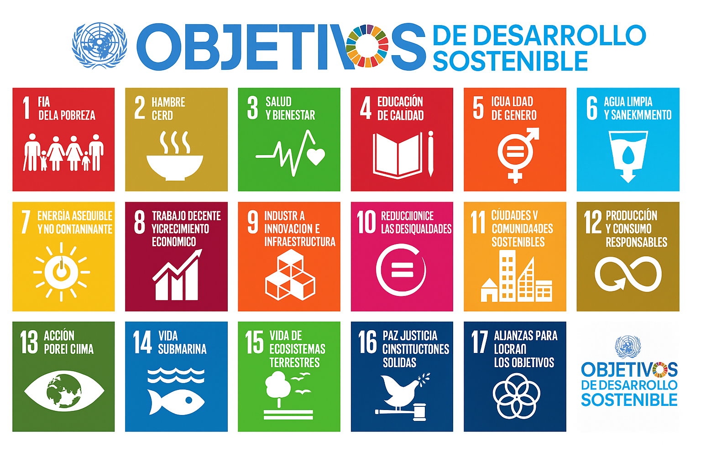

¿Qué es la Sostenibilidad?
Al hablar de sostenibilidad nos referimos a la capacidad que tenemos los seres humanos para satisfacer nuestras necesidades intentando usar correctamente los recursos que tenemos para no comprometer esa misma capacidad de las generaciones futuras. Se dice que este término abarca 3 dimensiones que están conectadas:
-
Sostenibilidad Ambiental: en este pilar se gestionan los recursos de forma responsable y se protegen los ecosistemas para que puedan seguir funcionando con normalidad.
-
Sostenibilidad Social: en este pilar se mejora la calidad de vida en varios ámbitos como la equidad, la inclusión y la cohesión social en las diferentes comunidades.
-
Sostenibilidad Económica: en este pilar se busca la prosperidad económica, que sea rentable a largo plazo y también responsable con el ámbito social y ambiental.
Segun un integrante de la ONU llamado Gro Harlem Brundtland:
La sostenibilidad es el desarrollo que satisface las necesidades del presente sin comprometer la capacidad de las futuras generaciones para satisfacer sus propias necesidades.
Aspectos ASG
Son unos criterios que evalúan cómo una empresa aplica la sostenibilidad y qué impacto. Estos criterios son:
Ambiental: mide el impacto de la empresa en el medio ambiente.
Social: evalúa cómo trata la empresa a las diferentes personas que trabajan con o para ella y cómo tratan a sus clientes.
Gobernanza: evalúa la forma en la que la empresa está administrada y controlada.
Te preguntarás porque a las empresas les interesan estos aspectos, les interensan por las siguentes razones:
-
Tener una buena evalución mejora la reputación de la empresa.
-
Tener una buena evalución concede un posible acceso a una futura financiación.
-
Tener controlados estos aspectos ayuda a gestionar ciertos riesgos.
-
Tener una buena evalución aporta una cierta ventaja competitiva frente a otras empresas.
Marcos internacionales
En la sostenibilidad existen ciertos marcos o entidades internacionales que impulsan y luchan por la sostenibilidad. Algunos de ellos son:
- Agenda 2030
- Objetivos de desarrollo sostenible
- Acuerdo de parís sobre el cambio climático
- Convenio sobre la diversidad biológica
- Programa de las naciones unidas para el medioambiente
Objetivos de desarrollo sostenible
La siguiente imagen muestra todos los ODS

Hay ODS que están relacionados con la informática y el desarrollo de software. Si te enfocas en la creación de tecnologías y software nuevos para ayudar al medioambiente y a la sociedad, algunos ODS relacionados son:
| ODS | Relación |
|---|---|
| Industria, innovacion e infraestructura | Todo el mundo tecnológico forma parte de la innovación en infraestructuras digitales |
| Educación de calidad | El software educativo y las plataformas online ayudan a las personas a aprender de manera accesible |
| Produccion y consumo responsable | Crear software para reducir el gasto innecesario de recursos |